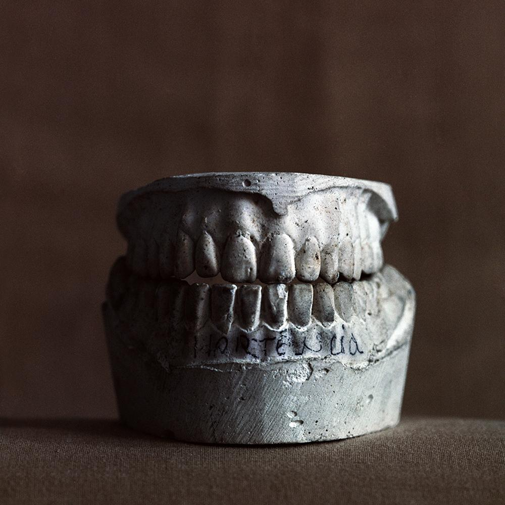
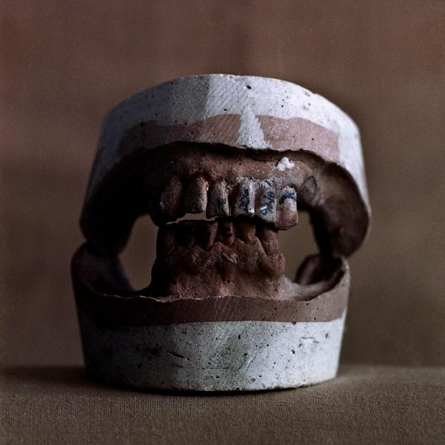

2016
Spoiled Smile
Fotografias

Spoiled Smile #1
- Dimensões
- 650 × 650 mm
- Série
- Spoiled Smile
- Ano
- 2016

Spoiled Smile #2
- Dimensões
- 650 × 650 mm
- Série
- Spoiled Smile
- Ano
- 2016
Spoiled Smile é uma série composta por nove fotografias de moldes de bocas em gesso, realizadas em filme colorido de médio formato (6 × 6 cm).
A série foi produzida a partir de uma pesquisa sobre processos fotográficos químicos. Para sua realização, o artista desenvolveu experimentalmente um revelador colorido obtido pela extração de compostos químicos presentes em tinturas capilares, buscando alternativas aos processos industriais convencionais de revelação fotográfica. O procedimento integra uma investigação mais ampla sobre a materialidade da fotografia e as possibilidades de intervenção em seus processos técnicos.
O nome da série faz referência à instabilidade presente tanto na imagem quanto no corpo. Os moldes de gesso registram cavidades, ausências e vestígios de uma anatomia que já não está presente, enquanto o próprio processo fotográfico é submetido a condições experimentais que introduzem variações cromáticas e imprevisibilidades materiais.
A concepção do trabalho foi influenciada pela expressão “realidade porosa”, citada por Zygmunt Bauman em Modernidade Líquida, a partir de uma referência a Ralph Waldo Emerson. Em Spoiled Smile, a ideia de porosidade manifesta-se na fragilidade das fronteiras entre presença e ausência, interior e exterior, permanência e transformação.
As nove imagens constituem um conjunto em que corpo, matéria fotográfica e processo químico são apresentados como estruturas igualmente sujeitas à alteração, ao desgaste e à instabilidade.